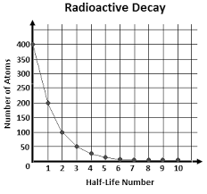

Chemistry Notes
Radioactivity
Definitions
- Radioactivity is an automatic spontaneous disintegration of nuclei of some heavy elements emitting some kinds of radiant energy
- Elements which exhibit this are said to be radioactive and emit different types of radiation
Types of Radiation from Radioactive Elements
- They can be identified by
- Measuring their penetration power
- They were directed to thin leaves of paper, aluminium, lead plates of varying thickness.
Observations:
A. One penetrated only thin foils of paper but not aluminium of 0.05mm thick and lead
B. One penetrated both paper and Al but not lead
C. One penetrated paper Al and lead - Directing them to air
Observations
(a) Penetrated less through air but caused a lot of ionization to the air molecule
(b) Penetrated more through air but caused less ionization
(c) Penetrated most through air but caused less ionization
These penetrated just as far as X-ray - Directing through magnetic /electric fields
Radiation through a magnetic field
Radiation through a magnetic field
The radioactive element radiation emits all the 3 types of radiation when they were directed to pass through electric magnetic fields to the fields
A. Were slightly deflected towards the negative
B. Were strongly deflected towards the positive
C. Were not deflected
Therefore
- A and B are charged particles
- Have opposite charges
- A is positive, B is negative and deflections obeyed through L.H Rul
- A were deflected less because they were moving with higher momentum (MV) because of high mass
Experimental evidence
Experiments carried out by Rattlerford revealed- A. Were positively charged and had a mass of 4 units and thus a charge of +2 these are Alpha particles therefore double charged helium ions,
- B. Were negatively charged and had similar properties to cathode rays. Measurement of charge/ mass confirmed they were electrons and carries a unit of 1. They are beta particles
- C. Were carrying no charge. They are electromagnetic waves similar to light rays and X- rays with a wave length of only 10 metres. Their emission enables a nucleus to lose surplus energy. They are gamma rays
- Measuring their penetration power
Evidence for the Nature of Gamma Rays
- Gamma rays
- Are unaffected by an electric field
- Are an affected by a magnetic field
- Can penetrate several centimeters of lead
- Can be diffracted by the lattice of a crystal
- Have no change in atomic number mass of the atoms emitting them
Nature and Property of α, β, and γ
| Nature | α - particles (helium nuclei) | β - particles (electrons) | γ - Gamma rays (Electromagnetic waves radiation) |
| Relative penetrating power | Least 5 cm in air stopped by paper and Al foils | Several metres of air thin Al foil (100) | Penetrate air, Al and many mm of Pb(10000) |
| Range in air | A few cm | A few m | A few km |
| Effect of electric and magnetic fields | Small deflection | Large deflection | No deflection |
| Ionization of gases | - Cause much ionization - Discharges electroscopes rapidly |
- Cause less ionization - Discharges electroscopes easily |
Negligible ionization |
Radioactive Decay Curve
Radioactive decay curve
- Is always a symptotic to the x-axis
Number of atoms of the Radioactive element - The number of atoms disintegrating per unit of time /second is always proportional to the number of atoms, N at that time. This number N decreases slowly / exponentially with time
- At any time to the number of atoms of a radioactive element is N/ No and at time T½, only ½ the total number of atoms of the original radioactive element will be present i.e. T½ = ½N
- This time is referred to as the half-life period of a radioactive element.
- Therefore, Half-life period T½ of a radioactive element is defined as the time taken for ½ the atoms to disintergrate
- Thus, In T½ the radioactivity of the element diminishes to half its
value
Example
Radioactive decay curve of radon
 Radioactive decay curve of radon
With half life of 4 days
No = 6 X 103 atoms
T½ = 4 days
No. Of atoms
103 x 6
103 x 5
103 x 4
103 x 3
Radon emits α- particles
Initial no of radon atoms = 103 X 6
After 4 days the number of atoms present=103 X 3
“ “ “ “8 days “ “ “ “ “ “ “ “ “ “ “ “ “ “ “ “ =103 X 1.5
“ “ “ “12 days “” “ “ “ “ “ “ “ “ “ “ “ “ “ = 103 X 0.75
It is impossible to predict the atoms that will disintergrate next
The Half Lives of Some Radioactive Isotopes
| Radioactive isotopes | Half life |
| Uranium - 238 | 4.5 X 109 years |
| Radium - 226 | 1.6 X 103 years |
| Carbon - 14 | 5.7 X 103 years |
| Strontium - 90 | 28 years |
| Iodine - 131 | 8.1 days |
| Radon - 222 | 4 days |
| Bismuth -214 | 19.7 minutes |
| Polonium - 218 | 3 minutes |
| Polonium - 214 | 1.5 X 10-4 sec |
- The half-life of a radioactive isotope provides aquantitave measure of its stability
- Thus, The shorter the half-life the faster the isotope decays and the more unstable it is
- The longer the half-life the slower the decay process and the more stable the isotope
Radioactive Disintegration Equations
-Different radioactive elements disintergrate to emit different radiations
- Emission of α particles
-Occurs in isotopes with an atomic number greater than 83 (Z > 83) because they are unstable since their nuclei are so heavy and their atomic mass is too large
-They attain stability by ejecting an alpha particle containing two protons and two neutrons
Examples

- Emission of β particles
- Occur in isotopes with more neutrons than stable isotopes of the same element, therefore heaviest isotopes of an element are likely to emit β particles to attain stability
- During the β-decay process, a neutron splits up forming a proton & an electron. The proton remains in the nucleus while the electron/β particles is ejected.
Result
Number of neutrons in the isotope decreases by one while number of protons increase by one.
Examples
- Emissions of α & β alternatively
- Emissions of beta particles in two stage
Application of Radioactivity/Using Radioactive Isotopes
- Carbon dating
- Radio active Carbon 14 nuclide produced when Nitrogen 14 is bombarded with radiocum from the sum is used.
- When they die carbon-14 resent starts to reduce as decay takes place by emission of β particles.
- Using the decay curve of carbon –14 it is possible to estimate age of the animals/plants since the carbon –14 is present in their tissues. - Medication/treatment of cancer
- Gamma rays are used to treat /kill cancer cells when the tumour is subjected to the radiations
E.g Gamma rays /penetrating from CO are used in treating inaccessible growths.
Superficial /skin cancers can be treated by less penetrating radiation from or in plastic sheets strapped on the affected - Studying metabolic pathways
-Radioactive Isotopes can be used to trace the uptake of metabolism of various elements by animals/plants.
E.g Uptake of phosphate & metabolism of phosphorus by plants can be studied using a fertilizer containing
Radioactive tracer studies using have helped in the exudation of photosynthesis and protein synthesis
have been used in the diagnosis & treatment of thyroid diseases &in research into thyroid gland functioning. - Thickness gauge and empty packet detectors
-Radiation passing through a material decreases as the material gets thicker
Hence:
Amount of penetrating Beta or-gamma- radiation can be used to estimate the thickness of various materials like paper, metal or plastic
-Radiation thickness gauges can be used to control the thickness of sheet steel emerging from a high-speed rolling mill.
-β –Rays measure thickness upto ~ 0.2cm of steel γ-rays can be used with steel upto 10cm thick.
-Level gauges are used to measure amount of liquid in fire extinguisher &gas cylinders
-Empty packet detectors can be set to reject empty/insufficiently filled packets filled packets of biscuits/cigarettes. - Decting pipe bursts
- Can be underground pipes carrying water /oil
- If the water / oil is mixed with radioactive substances form the mixture will leak at the point where there is a burst and the radiations can be detected if a detector is passed - Effect on static electricity
- In textile industry the presence of static charges can attract dust and cause fires
- When a radioactive element is placed in such industries the radiations emitted will ionize air and ions formed will attract the static charges : this minimises problems due to static charges
Hazards of Radioactive Isotopes
- Arise from
- Exposure of the body to external radiation
- Ingestion/ inhalation of the radioactive matter
- They damage body cells/ tissues
- Cause mutation/deformities
Precautions
- Protect the body with lad/ concrete shielding
- Never pick/ hold radioactive elements with bare hands ; use forceps and well protected tongs
- Use radiation absorbers
Sample Questions
- Particles from a radioactive source move through 7cm in air at ordinary pressure
- The radioactive emission of radium are α-, β- and γ. Draw labelled diagram to show how the rays can be separated
- The table below shows nuclides which are radioactive products of Their ½ lives and K.E
during decay
are shown
Nucleide Half life Energy Th 1.39 X 1010 years 3.98 Th 1.9 yrs 5.42 Ra 3.64 days 5.66 Rn 54.5 sec 6.28 Po 0.16 sec 6.77 At 3 × 10-4 sec 7.64 Bi 60.5 min X Po 2.9 X 10-7 sec 8.78 - Identify pairs of isotopes of same element
- Identify 2 nuclides by in this table, which have been produced directly by α- decay of other nuclides in the table. Use equations
- Identify 2 nuclides in this table, which have been produced by β- decay of other nuclides in the table. Use equations
- Suggest a series of decays for formation of
- Deduce how ½ life varies with energy of emitted rays
Suggest the value of X